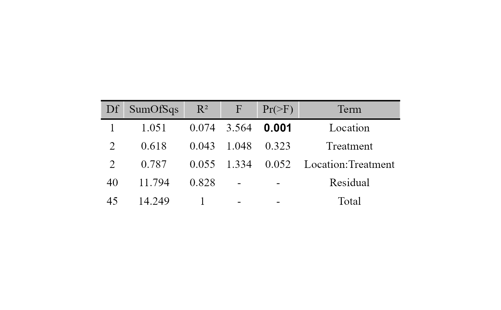
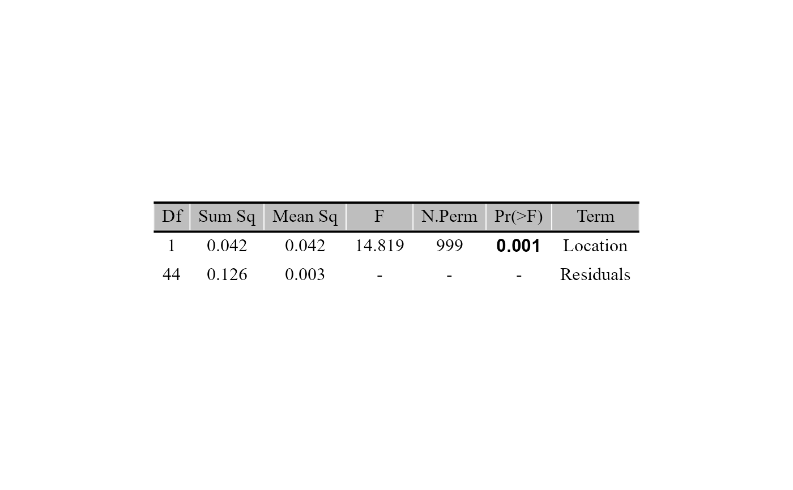
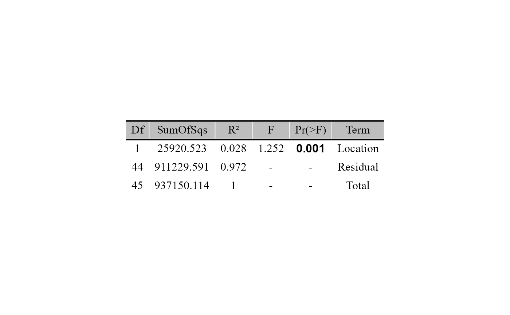

Runs a PERMANOVA (vegan::adonis2()) or a test of homogeneity of dispersions (vegan::betadisper()) on the distances between samples and returns the results as a table figure.
Usage
beta_test_table(
table,
metadata,
formula_str,
distance = "euclidean",
test = c("permanova", "betadisper"),
permutations = 999,
mc_samples = 1,
strata_var = NULL,
digits = 3,
save_table = FALSE,
table_filename = "beta_test_results.txt"
)Arguments
- table
A data frame with taxa in rows and samples in columns. The last column must be named
taxonomy, containing full taxonomic strings.- metadata
A data frame containing sample metadata. Its first column must hold the sample IDs (the column names of
table).- formula_str
Character. Right-hand side of the model formula, with columns of
metadata(e.g."Type_of_soil*Treatment").- distance
Character. Distance metric:
"compositional"(CLR with ALDEx2),"aitchison","robust.aitchison"or any other method ofvegan::vegdist()(e.g."bray","jaccard"). Default"euclidean". Case-insensitive. Ignored whentableis already a distance.- test
Statistical test to run: one of
"permanova"(default) or"betadisper". Case-insensitive.- permutations
Integer. Number of permutations for the test. Default
999.- mc_samples
Number of ALDEx2 Monte Carlo instances used when
distance = "compositional". With1(default) the clr values of one random instance are used: fast, but the result changes between runs (useset.seed()). With more, the clr values are averaged across instances, which gives an almost identical result in every run;128(ALDEx2's default) is suggested for final analyses, and takes longer. Ignored for other distances.- strata_var
Character. Name of a column in
metadatawithin which the permutations are restricted (strata). Optional;NULL(default) for none.- digits
Integer. Decimal places of the numeric columns (except the p-value). Default
3.- save_table
Logical. If
TRUE, saves the results table as a tab-delimited file. DefaultFALSE.- table_filename
Character. Name or path of the saved file (used when
save_table = TRUE). Default"beta_test_results.txt".
Value
A ggplot object (ggpubr::ggtexttable()) with the results
table; significant p-values are in bold. Use save_table = TRUE
to get the results as a tab-delimited file.
Details
The first column of metadata must hold the sample IDs;
metadata rows are matched to the samples by ID, so their order doesn't
matter. A precomputed distance is used as-is (distance is ignored).
The p-values come from permutations; call set.seed() before the
function to make the result reproducible.
Examples
table_path <- system.file("extdata", "tabla_bacteria.txt", package = "MicroBioMeta")
table <- read.delim(table_path, row.names = 1, check.names = FALSE)
metadata_path <- system.file("extdata", "metadata_bacteria.txt", package = "MicroBioMeta")
metadata <- read.delim(metadata_path, check.names = FALSE)
# Example using a data frame
beta_test_table(
table = table,
metadata = metadata,
formula_str = "Location*Treatment",
distance = "bray",
test = "permanova",
permutations = 999,
strata_var = "Plot"
)

# Example using a distance matrix
dist_matrix <- vegan::vegdist(
t(table[, setdiff(colnames(table), "taxonomy")]),
method = "bray"
)
beta_test_table(
table = dist_matrix,
metadata = metadata,
formula_str = "Location",
test = "betadisper"
)

# Compositional PERMANOVA (CLR via ALDEx2, then Euclidean)
beta_test_table(
table = table,
metadata = metadata,
formula_str = "Location",
distance = "compositional",
test = "permanova",
permutations = 999
)
#> no conditions provided: forcing denom = 'all'
#> no conditions provided: forcing conds = 'NA'
#> conditions vector supplied
#> operating in serial mode
#> computing center with all features
